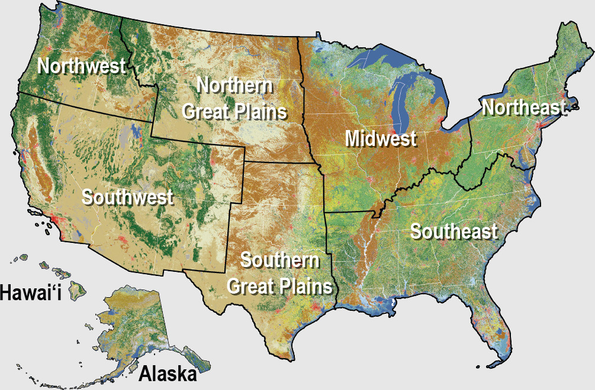

Figure 5.1: Land Use Composition of the United States

Land area as
%
Percent
Switch units of bars
Bars viewed as
S
Stacked
Switch rendering of bars
Agriculture
Barren
Developed
Forest
Grass/Shrub
Snow/Ice
Water
Wetland